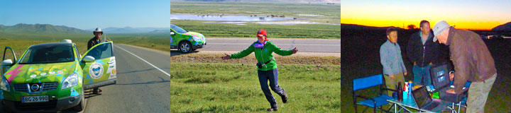
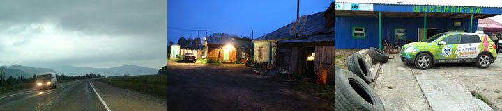
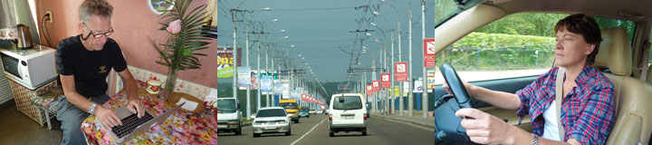
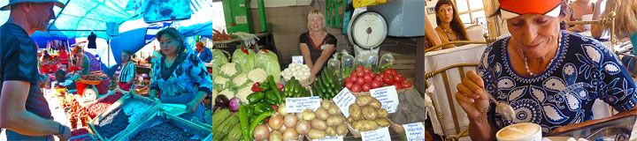

Vi er kommet ud af Rusland og ind i Mongoliet med Grønne. Vi har kørt 8000 km fra Estland til Mongoliet gennem Rusland og været der 50 dage. Det tog fire timer at komme over grænsen for der var fem biler foran os. Inde i Mongoliet stod Claus og Karen Elise som lige var kommet med bussen. Lidt efter dukkede Moto Mundos mongolske ven og samarbejdspartner Sukhee op i sin store Land Cruiser. Sukhee har lige vundet det hårde Rally Mongolia. I morgen vil han køre Claus og Karen Elise til Ulan Batar hvor vi mødes igen. Vi fandt lejr ved en flod og slog teltene op til generatorens og græshoppernes sang imens dagen blev til en glødende stribe i horisonten. Vi er SÅ glade over at være kommet til Mongoliet.
Vi blev i det venlige gæstehus til efter frokost. Avisen og det lokale fjernsyn kom og filmede Grønne som fik en masse opmærksomhed - første elbil i Ulan Ude!
Vi kørte gennem det smukt bølgende landskab med skiftevis enge og skove, bjerge og dale. Om aftenen slog vi lejr i en fyrreskov. Pludselig så Hjalte et lys... var det er hus? Lyset blev kraftigere - lygterne fra en lastvogn? Der var pludselig flere lys - en hel militærkolonne? Det flimrende lys tog hurtigt til - en skovbrand! Vi var på vej til at flå teltet ned og komme hurtigt væk, da Hjalte opdagede at lyset var vokset til en stor rund skive - fuldmånen! Vi lo af os selv, faldt til ro og krøb ind i teltet. Natten var iskold, jeg frøs i mine to soveposer. Det er blevet efterår i Sibirien.
Grønne stod uden strømstik, så vi forlod de elendige senge før solopgang. Vi løb ud for strøm i en landsby, hvor den unge pige i butikken ikke turde give os adgang til en stikkontakt. To gange mere blev vi afvist- og da vi endelig fik en fat i noget var det meget svag strøm. Da vi ikke orkede at vente i 14 timer på at grønne skulle lade helt op, blev det til sjatladning dagen igennem. Sent på aftenen, nåede vi - guderne ved hvordan- ind i Ulan Ude. Vi kom til Gæstehuset på grønnes sidste % strøm. Der var Klaus og Karen Elise også ankommet. Dagens lære er, at det ikke duer at begynde at køre elbil uden at den er opladet, det er alt for opslidende.
Nina
 Grønne stormede velopladet op og ned ad bakkerne. Ved frokosttid købte vi brød og varme nyrøgede Omul fisk fra Baikalsøen. Ved frokosttid fik Grønne stærk strøm i Sludjanka, imens vi gik en lang tur langs Baikalsøen og jernbanen. Luften frisk og krystalklar, søen fortonede sig i dis i det fjerne, søbreden så fredfyldt.Vi endte dagen på en meget landlig cafe med værelser. Måske det samme sted vi var engang for 22 år siden. Nu er der bar med musikvideoer, og badstue med vodkadrikkende russere. El-ledningerne var så tynde at strømmen blev taget fra Grønne for ikke at brænde hele den vakkelvorne cafe ned til grunden.
Grønne stormede velopladet op og ned ad bakkerne. Ved frokosttid købte vi brød og varme nyrøgede Omul fisk fra Baikalsøen. Ved frokosttid fik Grønne stærk strøm i Sludjanka, imens vi gik en lang tur langs Baikalsøen og jernbanen. Luften frisk og krystalklar, søen fortonede sig i dis i det fjerne, søbreden så fredfyldt.Vi endte dagen på en meget landlig cafe med værelser. Måske det samme sted vi var engang for 22 år siden. Nu er der bar med musikvideoer, og badstue med vodkadrikkende russere. El-ledningerne var så tynde at strømmen blev taget fra Grønne for ikke at brænde hele den vakkelvorne cafe ned til grunden.
Kom så blå bil, ind i kampen, du kan godt !!! Mange knus Bent
Om formiddagen fik jeg besøg af Jack, en ven der interesserer sig for miljø og ølologi. Senere på dagen, imens jeg tog en lille skraber, blev der pludselig rumsteret i mit indre. Og inden jeg vidste af det var min inverter byttet om med en ny. Nina og Hjalte sagde at det var vidunderligt at jeg kunne køre igen. De ville på en ganske lille prøvetur, men jeg snød dem og kørte en meget længere tur over broen og rundt på de lange ensrettede gader. Jeg havde gerne kørt videre mod Ulan Batar med det samme,. Men det var blevet sent, så jeg tilbragte natten i gården bag Svatlanas lejlighed.
Hilsen fra Grønne
 Svetlana kørte os til DHL, som skrev flere dokumenter til toldvæsenet. Imens de blev behandlet kørte vi til det højeste punkt i Irkutsk med udsigt ud over floden. Lige før kl.18 fik vi pakken. Det var næsten ikke til at tro på det før vi åbnede den ved siden af Grønne. Ved fælles anstrengelser fik vi skiftet inverteren. Mørket var ved at falde på inden vi var færdige. Glad og lykkelig kunne Søren gennem satellitforbindelsen konstatere at ledningerne var sat rigtigt på, da jeg startede bilen uden at den sprang i luften. Hjemme i Ulitsa Lenina fik Hjalte skaffet strøm til Grønne gennem et kabel
Svetlana kørte os til DHL, som skrev flere dokumenter til toldvæsenet. Imens de blev behandlet kørte vi til det højeste punkt i Irkutsk med udsigt ud over floden. Lige før kl.18 fik vi pakken. Det var næsten ikke til at tro på det før vi åbnede den ved siden af Grønne. Ved fælles anstrengelser fik vi skiftet inverteren. Mørket var ved at falde på inden vi var færdige. Glad og lykkelig kunne Søren gennem satellitforbindelsen konstatere at ledningerne var sat rigtigt på, da jeg startede bilen uden at den sprang i luften. Hjemme i Ulitsa Lenina fik Hjalte skaffet strøm til Grønne gennem et kabel
Toldvæsenet har svære kvaler ved at levere os pakken med reservedele. Vi fik hjælp fra vores værtinde Svetlana. Der er ingen ende på de papirer der skal produceres. En teknisk manual med tegninger som forklarer hvad en inverter er, oversatte Svetlanal til russisk. Man burde tvinge en tolder til at læse den. Forøvrigt er reservedelen kun i transit, ligesom resten af bilen. Men vi skal betale told alligevel. Måske får vi pakken i morgen eftermiddag. Det vil vi fejre nu om lidt sammen med Svetlana og hendes mand, en plade chokolade og en flaske russisk champagn
Reservedelen til Grønne har ligget i Irkutsk siden i fredags. Hos DHL fik Hjalte overtalt en medarbejder til at begynde processen med at få pakken ud fra tolden. Vi tog med sporvognen og stod af ved det centrale marked, som bugnede af alle slags fødevarer, en kæmpeforandring fra da vi var her i kommunisttiden for 22 år siden. Dengang var køledisk-atrapperne tomme. Man skulle være krigsveteran for at få lov til at købe en stump pølse på sit rationeringskort, og ville man købe brød måtte man stille op i en lang kø.
Nu er der masser af forbrugsgoder, selv her ude i Sibirien. I den centrale del af Irkutsk ligge en perlerække af cafeer og restauranter. Folk er velklædte, og alle har travlt,
med at tjene og bruge penge.
Nina

Jack, ejeren af backer-hotellet Baikaler tog Hjalte Claus Karen Elise og mig med til Listvjanka. Der viste han os to fantastiske huse som han var ved at bygge med solfanger og hensyntagen til miljøet.
Baikalsøen var blå som himmelen, og stor som et hav. Mange søndagsglade russere var taget derud. Karen Elise og jeg tog et dyp i det klare iskolde vand. Senere købte vi lune røgede fisk og koldt øl, som vi nød på sranden. Til sidst tog vi bussen tilbage til irkutsk, med hovederne fyldt op til randen af solskin og skønhed
Nina